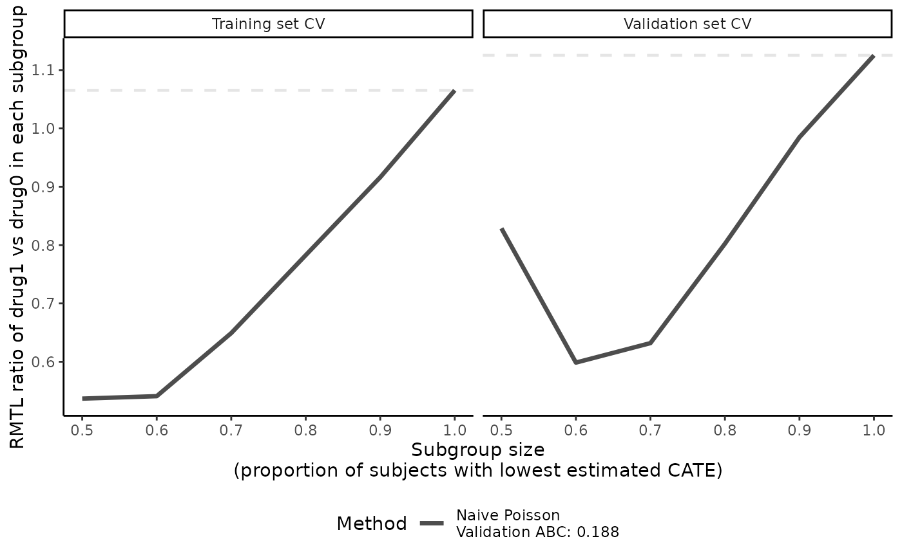
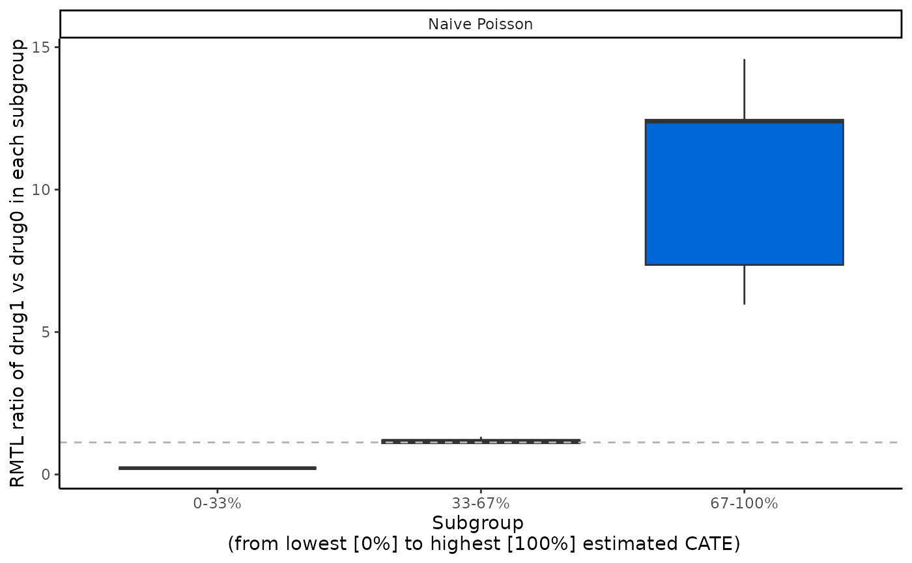

Cross-validation of the conditional average treatment effect (CATE) score for survival outcomes
Source:R/crossv.R
catecvsurv.RdProvides doubly robust estimation of the average treatment effect (ATE) by the
RMTL (restricted mean time lost) ratio in nested and mutually exclusive subgroups of patients
defined by an estimated conditional average treatment effect (CATE) score via
cross-validation (CV). The CATE score can be estimated with up to 5 methods among the following:
Random forest, boosting, poisson regression, two regressions, and contrast regression
(see score.method).
Usage
catecvsurv(
data,
score.method,
cate.model,
ps.model,
ps.method = "glm",
initial.predictor.method = "randomForest",
ipcw.model = NULL,
ipcw.method = "breslow",
minPS = 0.01,
maxPS = 0.99,
followup.time = NULL,
tau0 = NULL,
higher.y = TRUE,
prop.cutoff = seq(0.5, 1, length = 6),
prop.multi = c(0, 1/3, 2/3, 1),
abc = TRUE,
train.prop = 3/4,
cv.n = 10,
error.max = 0.1,
max.iter = 5000,
surv.min = 0.025,
tree.depth = 2,
n.trees.rf = 1000,
n.trees.boosting = 200,
B = 3,
Kfold = 5,
error.maxNR = 0.001,
max.iterNR = 150,
tune = c(0.5, 2),
seed = NULL,
plot.gbmperf = TRUE,
verbose = 0
)Arguments
- data
A data frame containing the variables in the outcome, propensity score, and inverse probability of censoring models (if specified); a data frame with
nrows (1 row per observation).- score.method
A vector of one or multiple methods to estimate the CATE score. Allowed values are:
'randomForest','boosting','poisson','twoReg', and'contrastReg'.- cate.model
A standard
Survformula describing the outcome model to be fitted. The outcome must appear on the left-hand side.- ps.model
A formula describing the propensity score (PS) model to be fitted. The treatment must appear on the left-hand side. The treatment must be a numeric vector coded as 0/1. If data are from a randomized controlled trial, specify
ps.model = ~1as an intercept-only model.- ps.method
A character value for the method to estimate the propensity score. Allowed values include one of:
'glm'for logistic regression with main effects only (default), or'lasso'for a logistic regression with main effects and LASSO penalization on two-way interactions (added to the model if interactions are not specified inps.model). Relevant only whenps.modelhas more than one variable.- initial.predictor.method
A character vector for the method used to get initial outcome predictions conditional on the covariates specified in
cate.model. Only applies whenscore.methodincludes'twoReg'or'contrastReg'. Allowed values include one of'randomForest','boosting'and'logistic'(fastest). Default is'randomForest'.- ipcw.model
A formula describing the inverse probability of censoring weighting (IPCW) model to be fitted. The left-hand side must be empty. Default is
ipcw.model = NULL, which corresponds to specifying the IPCW model with the same covariates as the outcome modelcate.modelplus the treatment.- ipcw.method
A character value for the censoring model. Allowed values are:
'breslow'(Cox regression with Breslow estimator of the baseline survivor function),'aft (exponential)','aft (weibull)','aft (lognormal)'or'aft (loglogistic)'(accelerated failure time model with different distributions for y variable). Default is'breslow'.- minPS
A numerical value (in [0, 1]) below which estimated propensity scores should be truncated. Default is
0.01.- maxPS
A numerical value (in (0, 1]) above which estimated propensity scores should be truncated. Must be strictly greater than
minPS. Default is0.99.- followup.time
A column name in
dataspecifying the maximum follow-up time, interpreted as the potential censoring time. Default isfollowup.time = NULL, which corresponds to unknown potential censoring time.- tau0
The truncation time for defining restricted mean time lost. Default is
NULL, which corresponds to setting the truncation time as the maximum survival time in the data.- higher.y
A logical value indicating whether higher (
TRUE) or lower (FALSE) values of the outcome are more desirable. Default isTRUE.- prop.cutoff
A vector of numerical values (in (0, 1]) specifying percentiles of the estimated log CATE scores to define nested subgroups. Each element represents the cutoff to separate observations in nested subgroups (below vs above cutoff). The length of
prop.cutoffis the number of nested subgroups. An equally-spaced sequence of proportions ending with 1 is recommended. Default isseq(0.5, 1, length = 6).- prop.multi
A vector of numerical values (in [0, 1]) specifying percentiles of the estimated log CATE scores to define mutually exclusive subgroups. It should start with 0, end with 1, and be of
length(prop.multi) > 2. Each element represents the cutoff to separate the observations intolength(prop.multi) - 1mutually exclusive subgroups. Default isc(0, 1/3, 2/3, 1).- abc
A logical value indicating whether the area between curves (ABC) should be calculated at each cross-validation iterations, for each
score.method. Default isTRUE.- train.prop
A numerical value (in (0, 1)) indicating the proportion of total data used for training. Default is
3/4.- cv.n
A positive integer value indicating the number of cross-validation iterations. Default is
10.- error.max
A numerical value > 0 indicating the tolerance (maximum value of error) for the largest standardized absolute difference in the covariate distributions or in the doubly robust estimated rate ratios between the training and validation sets. This is used to define a balanced training-validation splitting. Default is
0.1.- max.iter
A positive integer value indicating the maximum number of iterations when searching for a balanced training-validation split. Default is
5,000.- surv.min
Lower truncation limit for the probability of being censored. It must be a positive value and should be chosen close to 0. Default is
0.025.- tree.depth
A positive integer specifying the depth of individual trees in boosting (usually 2-3). Used only if
score.method = 'boosting'or ifinitial.predictor.method = 'boosting'withscore.method = 'twoReg'or'contrastReg'. Default is 2.- n.trees.rf
A positive integer specifying the maximum number of trees in random forest. Used if
score.method = 'ranfomForest'or ifinitial.predictor.method = 'randomForest'withscore.method = 'twoReg'or'contrastReg'. Only applies for survival outcomes. Default is1000.- n.trees.boosting
A positive integer specifying the maximum number of trees in boosting (usually 100-1000). Used if
score.method = 'boosting'or ifinitial.predictor.method = 'boosting'withscore.method = 'twoReg'or'contrastReg'. Default is200.- B
A positive integer specifying the number of time cross-fitting is repeated in
score.method = 'twoReg'and'contrastReg'. Default is3.- Kfold
A positive integer specifying the number of folds used in cross-fitting to partition the data in
score.method = 'twoReg'and'contrastReg'. Default is5.- error.maxNR
A numerical value > 0 indicating the minimum value of the mean absolute error in Newton Raphson algorithm. Used only if
score.method = 'contrastReg'. Default is0.001.- max.iterNR
A positive integer indicating the maximum number of iterations in the Newton Raphson algorithm. Used only if
score.method = 'contrastReg'. Default is150.- tune
A vector of 2 numerical values > 0 specifying tuning parameters for the Newton Raphson algorithm.
tune[1]is the step size,tune[2]specifies a quantity to be added to diagonal of the slope matrix to prevent singularity. Used only ifscore.method = 'contrastReg'. Default isc(0.5, 2).- seed
An optional integer specifying an initial randomization seed for reproducibility. Default is
NULL, corresponding to no seed.- plot.gbmperf
A logical value indicating whether to plot the performance measures in boosting. Used only if
score.method = 'boosting'or ifscore.method = 'twoReg'or'contrastReg'andinitial.predictor.method = 'boosting'. Default isTRUE.- verbose
An integer value indicating what kind of intermediate progress messages should be printed.
0means no outputs.1means only progress bar and run time.2means progress bar, run time, and all errors and warnings. Default is0.
Value
Returns a list containing the following components saved as a "precmed" object:
ate.randomForest: A list of ATE output measured by the RMTL ratio ifscore.methodincludes'randomForest':ate.est.train.high.cv: A matrix of numerical values withlength(prop.cutoff)rows andcv.ncolumns. The ith column/jth row cell contains the estimated ATE in the nested subgroup of high responders defined by CATE score above (ifhigher.y = FALSE) or below (ifhigher.y = TRUE) theprop.cutoff[j]x100% percentile of the estimated CATE score in the training set in the ith cross-validation iteration.ate.est.train.low.cv: A matrix of numerical values withlength(prop.cutoff) - 1rows andcv.ncolumns. TThe ith column/jth row cell contains the estimated ATE in the nested subgroup of low responders defined by CATE score below (ifhigher.y = FALSE) or above (ifhigher.y = TRUE) theprop.cutoff[j]x100% percentile of the estimated CATE score in the training set in the ith cross-validation iteration.ate.est.valid.high.cv: Same asate.est.train.high.cv, but in the validation set.ate.est.valid.low.cv: Same asate.est.train.low.cv, but in the validation set.ate.est.train.group.cv: A matrix of numerical values withlength(prop.multi) - 1rows andcv.ncolumns. The ith column contains the estimated ATE inlength(prop.multi) - 1mutually exclusive subgroups defined byprop.multiin the training set in ith cross-validation iteration.ate.est.valid.group.cv: Same asate.est.train.group.cv, but in the validation set.abc.valid: A vector of numerical values of lengthcv.n, The ith element returns the ABC of the validation curve in the ith cross-validation iteration. Only returned ifabc = TRUE.
ate.boosting: A list of results similar toate.randomForestoutput ifscore.methodincludes'boosting'.ate.poisson: A list of results similar toate.randomForestoutput ifscore.methodincludes'poisson'.ate.twoReg: A list of results similar toate.randomForestoutput ifscore.methodincludes'twoReg'.ate.contrastReg: A list of results similar toate.randomForestoutput ifscore.methodincludes'contrastReg'. This method has an additional element in the list of results:converge.contrastReg.cv: A vector of logical value of lengthcv.n. The ith element indicates whether the algorithm converged in the ith cross-validation iteration.
hr.randomForest: A list of adjusted hazard ratio ifscore.methodincludes'randomForest':hr.est.train.high.cv: A matrix of numerical values withlength(prop.cutoff)rows andcv.ncolumns. The ith column/jth row cell contains the estimated HR in the nested subgroup of high responders defined by CATE score above (ifhigher.y = FALSE) or below (ifhigher.y = TRUE) theprop.cutoff[j]x100% percentile of the estimated CATE score in the training set in the ith cross-validation iteration.hr.est.train.low.cv: A matrix of numerical values withlength(prop.cutoff) - 1rows andcv.ncolumns. TThe ith column/jth row cell contains the estimated HR in the nested subgroup of low responders defined by CATE score below (ifhigher.y = FALSE) or above (ifhigher.y = TRUE) theprop.cutoff[j]x100% percentile of the estimated CATE score in the training set in the ith cross-validation iteration.hr.est.valid.high.cv: Same ashr.est.train.high.cv, but in the validation set.hr.est.valid.low.cv: Same ashr.est.train.low.cv, but in the validation set.hr.est.train.group.cv: A matrix of numerical values withlength(prop.multi) - 1rows andcv.ncolumns. The ith column contains the estimated HR inlength(prop.multi) - 1mutually exclusive subgroups defined byprop.multiin the training set in ith cross-validation iteration.hr.est.valid.group.cv: Same ashr.est.train.group.cv, but in the validation set.
hr.boosting: A list of results similar tohr.randomForestoutput ifscore.methodincludes'boosting'.hr.poisson: A list of results similar tohr.randomForestoutput ifscore.methodincludes'poisson'.hr.twoReg: A list of results similar tohr.randomForestoutput ifscore.methodincludes'twoReg'.hr.contrastReg: A list of results similar tohr.randomForestoutput ifscore.methodincludes'contrastReg'.props: A list of 3 elements:prop.onlyhigh: The original argumentprop.cutoff, reformatted as necessary.prop.bi: The original argumentprop.cutoff, similar toprop.onlyhighbut reformatted to exclude 1.prop.multi: The original argumentprop.multi, reformatted as necessary to include 0 and 1.
overall.ate.train: A vector of numerical values of lengthcv.n. The ith element contains the ATE (RMTL ratio) in the training set of the ith cross-validation iteration, estimated with the doubly robust estimator.overall.hr.train: A vector of numerical values of lengthcv.n. The ith element contains the ATE (HR) in the training set of the ith cross-validation iteration.overall.ate.valid: A vector of numerical values of lengthcv.n. The ith element contains the ATE (RMTL ratio) in the validation set of the ith cross-validation iteration, estimated with the doubly robust estimator.overall.hr.valid: A vector of numerical values of lengthcv.n. The ith element contains the ATE (HR) in the validation set of the ith cross-validation iteration.errors/warnings: A nested list of errors and warnings that were wrapped during the calculation of ATE. Errors and warnings are organized byscore.methodand position in the CV flow.higher.y: The originalhigher.yargument.abc: The originalabcargument.cv.n: The originalcv.nargument.response: The type of response. Always 'survival' for this function.formulas:A list of 3 elements: (1)cate.modelargument, (2)ps.modelargument and (3) original labels of the left-hand side variable inps.model(treatment) if it was not 0/1.
Details
The CATE score represents an individual-level treatment effect expressed as the restricted mean survival time (RMTL) ratio) for survival outcomes. It can be estimated with boosting, Poisson regression, random forest, and the doubly robust estimator two regressions (Yadlowsky, 2020) applied separately by treatment group or with the other doubly robust estimator contrast regression (Yadlowsky, 2020) applied to the entire data set.
Internal CV is applied to reduce optimism in choosing the CATE estimation method that
captures the most treatment effect heterogeneity. The CV is applied by repeating the
following steps cv.n times:
Split the data into a training and validation set according to
train.prop. The training and validation sets must be balanced with respect to covariate distributions and doubly robust RMTL ratio estimates (seeerror.max).Estimate the CATE score in the training set with the specified scoring method.
Predict the CATE score in the validation set using the scoring model fitted from the training set.
Build nested subgroups of treatment responders in the training and validation sets, separately, and estimate the ATE within each nested subgroup. For each element i of
prop.cutoff(e.g.,prop.cutoff[i]= 0.6), take the following steps:Identify high responders as observations with the 60% (i.e.,
prop.cutoff[i]x100%) highest (ifhigher.y = FALSE) or lowest (ifhigher.y = TRUE) estimated CATE scores.Estimate the ATE in the subgroup of high responders using a doubly robust estimator.
Conversely, identify low responders as observations with the 40% (i.e., 1 -
prop.cutoff[i]x100%) lowest (ifhigher.y= FALSE) or highest (ifhigher.y= TRUE) estimated CATE scores.Estimate the ATE in the subgroup of low responders using a doubly robust estimator.
If
abc= TRUE, calculate the area between the ATE and the series of ATEs in nested subgroups of high responders in the validation set.Build mutually exclusive subgroups of treatment responders in the training and validation sets, separately, and estimate the ATE within each subgroup. Mutually exclusive subgroups are built by splitting the estimated CATE scores according to
prop.multi.
References
Yadlowsky, S., Pellegrini, F., Lionetto, F., Braune, S., & Tian, L. (2020). Estimation and validation of ratio-based conditional average treatment effects using observational data. Journal of the American Statistical Association, 1-18. https://www.tandfonline.com/doi/full/10.1080/01621459.2020.1772080
See also
catefitsurv() function and boxplot(), abc methods for
"precmed" objects.
Examples
# \donttest{
library(survival)
tau0 <- with(survivalExample,
min(quantile(y[trt == "drug1"], 0.95), quantile(y[trt == "drug0"], 0.95)))
catecv <- catecvsurv(data = survivalExample,
score.method = "poisson",
cate.model = Surv(y, d) ~ age + female + previous_cost +
previous_number_relapses,
ps.model = trt ~ age + previous_treatment,
initial.predictor.method = "logistic",
ipcw.model = ~ age + previous_cost + previous_treatment,
tau0 = tau0,
higher.y = TRUE,
cv.n = 5, seed = 999, verbose = 1)
#> Warning: Variable trt was recoded to 0/1 with drug0->0 and drug1->1.
#>
|
| | 0%
#> cv = 1
#> splitting the data..
#> training..
#> validating..
#> Mon Dec 12 15:10:43 2022
#>
|
|============== | 20%
#> cv = 2
#> splitting the data..
#> training..
#> validating..
#> Mon Dec 12 15:10:52 2022
#>
|
|============================ | 40%
#> cv = 3
#> splitting the data..
#> training..
#> validating..
#> Mon Dec 12 15:11:02 2022
#>
|
|========================================== | 60%
#> cv = 4
#> splitting the data..
#> training..
#> validating..
#> Mon Dec 12 15:11:12 2022
#>
|
|======================================================== | 80%
#> cv = 5
#> splitting the data..
#> training..
#> validating..
#> Mon Dec 12 15:11:21 2022
#>
|
|======================================================================| 100%
#> Total runtime : 48.05 secs
# Try:
plot(catecv, ylab = "RMTL ratio of drug1 vs drug0 in each subgroup")

boxplot(catecv, ylab = "RMTL ratio of drug1 vs drug0 in each subgroup")
#> Warning: Removed 4 rows containing non-finite values (`stat_boxplot()`).

abc(catecv)
#> cv1 cv2 cv3 cv4 cv5
#> poisson 0.2165482 0.1988858 0.2184554 0.2111615 0.09635128
# }